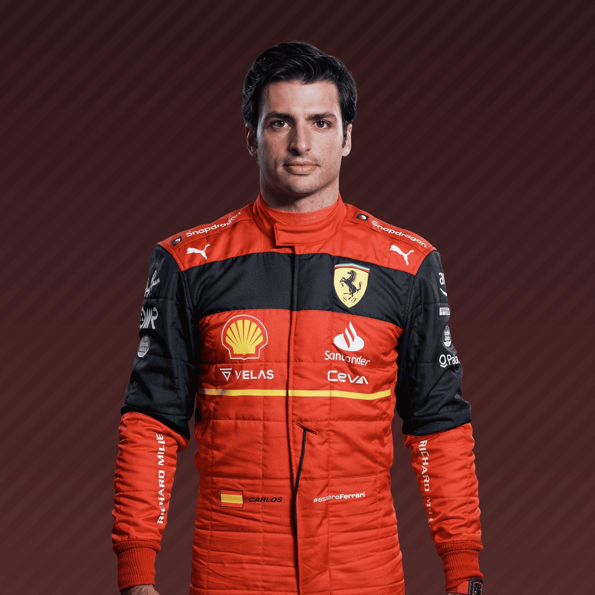

The History Of Formula One
F1 Racing Teams
Ferrari
Current Drivers

Team Profile
For many, Ferrari and Formula 1 racing have become inseparable. The only team to have competed in every season since the world championship began, the Prancing Horse has grown from the humble dream of founder Enzo Ferrari to become one of the most iconic and recognised brands in the world. Success came quickly through the likes of Alberto Ascari and John Surtees, and continued – in amongst leaner times – with Niki Lauda in the 1970s and then Michael Schumacher in the 2000s, when Ferrari claimed a then unprecedented five consecutive title doubles, securing their status as the most successful and decorated team in F1 history...
2021
Still no sign of a title challenge, but strong year-on-year improvement lifts them clear of McLaren for P3 overall, with more than double their 2020 points tally. New arrival Carlos Sainz outscores Charles Leclerc, the Spaniard taking four podiums to his team mate’s one.
2020
Sink to their worst performance in four decades, failing to win a race, scoring just three podiums and falling to sixth in the standings. Sebastian Vettel is told early on that his contract will not be renewed for 2021, and it’s Charles Leclerc who secures 98 of the team’s 131 points.
2019
The pattern of recent years continues, as they fail to win a race until August’s Belgian GP, despite being clear pre-season favourites and often having the quickest car. A tense (and at times expensive) rivalry sees newcomer Charles Leclerc out-score veteran team mate Sebastian Vettel, with two victories to the four-time champion’s one.